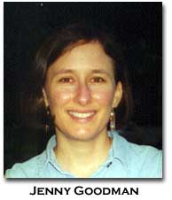

|
Breaking the Taboo Against the Epic: An Alternative Female Modernist Legacy for Contemporary Women Poets
by Jenny Goodman
Feminist conversations about women's experimental poetry have increasingly focused on the long poem, and especially on the large number of expansive poems by women that have emerged since 1960. Lynn Keller's Forms of Expansion: Recent Long Poems by Women (1997), for example, offers us the first book-length study of U.S. women's contributions to the genre of the long poem. In addition, several sessions at the 1997 MLA Convention led to a special issue of the journal Women Studies (27.5, 1998), edited by Kathleen Crown, also devoted to contemporary long poems by U.S. women. As scholarship on women's verse in extended forms continues to develop, the time seems right for an evaluation of how our constructions of the legacy of modernist women's long poems shape our evaluations of more recent long poems by women. I have been struck by the conspicuous absence of Muriel Rukeyser's expansive verse from most discussions of women's long poems, even as feminist poets and critics have intensified our investigations into modernist precursors for contemporary women's work. Rukeyser's ambitious poetic sequences date from the title poem of her first book, Theory of Flight (1935), which won the Yale Younger Poets Prize, to the title poem of her last book, The Gates (1976). Yet, despite a recent revival of interest in her early sequences among scholars of 1930s culture, feminists concerned with the modernist long poem have not provided her with nearly the amount of attention that they have given to other writers, for example, H.D. and Gertrude Stein. I believe that this relative lack of visibility of Rukeyser's work is related to a continuing emphasis on the aesthetics of female first-generation modernists associated with the American expatriate community in Europe, who have been claimed as precursors by contemporary female avant-gardists. The resulting conception of the female modernist long poem–and particularly of its negative relationship to the epic–makes it difficult to appreciate sequences such as Rukeyser's "The Book of the Dead" (1938). Yet Rukeyser's major poem should interest feminist experimentalists, as it draws upon a fascinating combination of modernist and documentary techniques to profoundly reshape the male modernist epic.1 In this essay, I want to investigate assumptions informing current notions of feminist experimental poetry that limit our understanding of modernist women's accomplishments in extended poetic forms. Further, I want to suggest that "The Book of the Dead" exemplifies an alternative legacy of female experimentalism, which also includes Gwendolyn Brooks's Annie Allen (1949). In these and other major poems, female second-generation modernists authorize their own entrance into the masculine tradition of the epic, reworking epic conventions to address topical political issues of their historical moment.2 If we determine the innovativeness of women's modernist poetry according to fixed criteria derived from the particular social and aesthetic context of the female expatriates, then we will continue to overlook the more overtly political experimentalisms of modernist women poets of the next generation, who wrote in quite different contexts. By identifying Rukeyser's different strand of female modernists' expansive verse, however, we can gain a powerful new perspective from which to read contemporary poets such as Sharon Doubiago, whose book-length Hard Country (1982) has just been republished after remaining out of print for about fifteen years.3 A roundtable conversation at the 1997 MLA convention (later transcribed in Women's Studies under the title "The Contemporary Long Poem: Feminist Intersections and Experiments") highlights some of the presuppositions among women poets and scholars associated with "postmodernist" aesthetics that might lead us to overlook or reject the writing of Rukeyser and its legacy for Doubiago and other poets of the 1960s generation. When asked about the relationship of their own long poems to the traditionally masculine genre of the epic, several female authors of long poems immediately sought to distance their own projects from the epic. For example, Kathleen Fraser spoke of her need to enter the form of the long poem indirectly because of the repressive force of the epic tradition behind it: I think this need to 'sneak' into it is fairly important for most of the women writers or poets that I know. There is somehow the weight of the epic…the weight of what seems like a formal and set history that we come into that actually is not set. But that's how it's presented, especially if you have a strong Biblical background, or an American or English literature background, if you are like I was and felt the love of the lyric and certain Biblical passages as a child, before school taught me what was appropriate and large and important. I certainly backed off from that epic tradition. I remember my husband often asking me, when he first met me and knew my poetry, why I didn't write the epic? I could think of nothing that I wanted to do less. The epic represented this huge burden of what already existed that I wasn't interested in trying to take on or in any way enter. I backed into the long poem. I backed into history…. (516) This vehement rejection of direct engagement with the epic was by no means exclusive to Fraser. Indeed, I think that the manner in which Fraser distances herself from the historical, religious, and literary traditions associated with the epic is common to feminist avant-gardists, who tend to embrace resistance and subversiveness over more accessible strategies for engaging in public discourse. This stance is often accompanied by a suspicion of traditional genres as inevitably caught up in "binary conceptual models that privilege the masculine as rational and universal and have defined the feminine as its complementary or negative pole" (Felski 42). This brand of feminist aesthetics and politics can be closely linked to the female modernist legacy that poets such as Fraser have helped to construct. When asked about her awareness of prior expansive poems by women as she began her own forays into longer work, Fraser mentioned H.D., Gertrude Stein, and Virginia Woolf as key modernist sources for her early long poems. These same figures appear in Fraser's account of the creation of HOW(ever) as representatives of a female modernist tradition that Fraser and her collaborators in that journal sought to restore to visibility during the 1980s ("Tradition" 61). Another prominent experimentalist poet participating in the 1997 MLA conversation, Susan Howe, mentioned H.D. and Woolf, along with Emily Dickinson, as key precursors with ambitions analogous to those of the epic (522). But Howe echoed Fraser's profound alienation from the epic tradition: I think one has to acknowledge, as a woman, the extraordinary power and beauty of some epic imaginations.… As a woman writer placing myself in a history of writing which I love (one that includes Spenser and Milton…) there is a great deal of anxiety because of course so few women are there. Where did they go? The absence has become infinitely mysterious to me. I think I am made up of it. I'm in it. How do I get out, and what does that mean anyway? (522) Fraser's and Howe's descriptions of a woman poet's relationship to the epic as "backing into" history or embodying "absence" are important articulations of women's experiences of exclusion from a deeply male-centered literary tradition. However, we need to be careful that these descriptions do not become prescriptions for our consideration of women's long poems. Before examining the challenge that "The Book of the Dead" poses to such discouraging assessments of the epic's possibilities for women poets, I would like to clarify my sense of the theoretical positions informing Fraser's and Howe's comments. In "The Tradition of Marginality," first presented as a talk in 1985, Fraser discusses her alienation from the dominant strain of feminist poetry that emerged in the 1970s, which she describes as "often lesbian and separatist in ideology and almost exclusively focused on poems of content that described and reinforced the values and life-styles shared by this community" (59). Feeling constricted by the notion of "the poem as a place for self-expression, for giving a true account," Fraser located a very different aesthetic approach in the writing of female modernists like Stein and Woolf, in whose formal innovations she found "a structural order of fragmentation and resistance to the patriarchal models" that she sought to embrace in her own writing (58-59). Fraser's statements from both the 1980s and 1990s suggest a general theoretical orientation associated with French feminism (indeed she cites Luce Irigaray in her 1985 piece). Rita Felski helpfully summarizes the relationship between literary form and feminist politics in this perspective: it is not the text which reflects female experience that best serves feminist interests, but rather the work which disrupts the very structures of symbolic discourse through which patriarchal culture is constituted. The artistically radical (experimental and innovative) text is also perceived to be politically radical, in that it seeks to challenge the most fundamental assumptions of a patriarchal society as embedded in its codes of representation and structures of discourse. (30) Howe also embraces this general position. (She, too, cites Irigaray in her 1990 Talisman interview, along with Alice Jardine's Gynesis, a text indebted to French theory.) Her interest in the question of how the feminine is inscribed in discourse is shown in her focus on the marginal and mute voices of the past and the ways in which deviations from standard rational communication might call attention to the erasures involved in apparently coherent histories.4 In My Emily Dickinson (1985), Howe makes clear that attention to silencings and absences is a feminist project. She applauds the "skillful and ironic investigation of patriarchal authority over literary history" that she finds in Dickinson and Stein, locating these favored writers' subversiveness at the linguistic level: "Who polices questions of grammar, parts of speech, connection, and connotation? Whose order is shut inside the structure of a sentence?" (11). There is a danger, however, in emphasizing exclusively qualities of women's "experimental" texts–such as ambiguous meanings and the refusal of conventional grammar and syntax–which theoretically disrupt, in French feminist terms, "phallocentric" discourse. Consider, for instance, Howe's proposal that the resistance to definitive interpretation in Dickinson's poetry might suggest that Dickinson willingly chose to inhabit a location outside of "power," "gender," and "voice": Well, one of Dickinson's abilities is to escape everything. If you think you can explain a poem, she quickly shows you there is a way out of that interpretation.… I think she may have chosen to enter the space of silence, a space where power is no longer an issue, gender is no longer an issue, voice is no longer an issue, where the idea of a printed book appears as a trap. ("Talisman" 170)5 I wonder to what degree this vision of "escape" differs from women's traditionally marginal role in print and in public life. Howe's apparent affirmation of silence, genderlessness, and powerlessness reminds me of French feminism's problematic resistance to rational discourse, the dangers of which Felski cogently identifies:
The definition of language proposed is a circular one; symbolic discourse is phallocentric, therefore processes of communication are always and necessarily phallocentric. Whether it is men or women who speak and whatever the context and content of their language, in speaking discursively they are doomed to speak the masculine. This view thereby serves to reinscribe women in a position of speechlessness outside language, theory, and the symbolic order, denying any potential power and effectivity to female discourse. (42) In the commentary on Rukeyser that follows, I hope to make the case for a more flexible stance regarding women's negotiations with public discourse and power. Rukeyser's prolific literary and intellectual contributions of the 1930s and early 1940s offer us a quite different model from that of silence and subversiveness in women's poetry before 1960.6 In "The Book of the Dead" (1938), Rukeyser neither "backs into" history nor shrinks at the virtual invisibility of female authors in the Western epic canon, from the classical heroic poems to the radical revisions of the genre by Walt Whitman and modernists like Ezra Pound. Rather, in the poem itself, she embarks on a "long road of presumption,"7 entering the historically masculine discourses of politics, technology, mythology, and war, and ultimately asserting a central role for women in the shaping of national traditions. Published in Rukeyser's second collection of poetry, U.S. 1 (1938), "The Book of the Dead" is based on the twenty-two-year-old Rukeyser's visit to the site of a much-publicized silicosis tragedy at Gauley Bridge, West Virginia and the transcript of a Congressional subcommittee's hearings on the events. Early in 1936, with photographer Nancy Naumburg, Rukeyser drove down highway U.S. 1 to research the circumstances of the dead and dying men who had taken work, in the heart of the Depression, building a tunnel for a hydroelectric dam and silica mining project. The majority of the men were African American migrant laborers, who breathed silica dust in the tunnel and lived in appalling work camps while the responsible companies chose higher profits over known safety precautions. "The Book of the Dead" begins, "These are roads to take when you think of your country," launching a poetic investigation into hidden America with not only a documentary but also an epic purpose. A glance at Rukeyser's poem, which spans more than sixty pages, reveals long passages of Congressional testimony; references to chest X-rays, lawsuits, mining safety equipment, and meager "relief" checks for disabled workers; and, finally, a stock quote for Union Carbide, as if it has been cut out from the business pages and pasted into the text. The poem obviously draws upon the various techniques of reportage developed both in forums of the radical Left and in government-sponsored cultural programs of the WPA. However, the modernist collage epic is an equally important source for Rukeyser's aesthetic strategies. In fact, in his review of U.S. 1, William Carlos Williams commented that Rukeyser used documents in "The Book of the Dead" "with something of the skill employed by Pound in the material of his 'Cantos'" (141).8 Rukeyser's central cited source from outside of the leftist documentary tradition is the Egyptian Book of the Dead, passages of which she incorporates in her radical reshaping of Eliot's use of the Osiris-Isis myth in The Waste Land. Also evoking The Waste Land and other early attempts at the twentieth-century epic–the early Cantos and Hart Crane's The Bridge–are cinematic movement, the incorporation of multiple voices, and a structure favoring sometimes startling juxtapositions over more conventional narrative or discursive forms. To authorize women as epic storytellers and agents in history, Rukeyser first builds upon visible female roles in mid-1930s culture that grant women a degree of authority: the social worker, the struggling mother, and the lyric poet. She represents each of these subject positions through a historically-based female character but chooses literary strategies that defamiliarize these characters so as to enlarge the roles for women available in the discourses of New Deal liberalism, Popular Front Marxism, and mainstream literary criticism. As a second legitimating strategy, Rukeyser grants women a visionary power that transcends the limits of available socially-produced positions for women, drawing upon the Egyptian Book of the Dead to compose a female-centered version of the well-known fertility myths that structure The Waste Land. Finally, she links her attempt to re-envision American identity to a more personal process of resisting her inherited position as a privileged woman, a position which renders her complicit in the suffering of her fellow citizens. My brief commentary on Rukeyser's complex poem can provide only a sketch of Rukeyser's engagements with the modernist epic; readers can test my analysis through a much closer look at the poem. However, my key point is that, far from merely reproducing an exclusionary and repressive patriarchal epic tradition, Rukeyser ultimately reworks the masculine conventions of the modernist epic to compose a narrative of cultural redemption in which women become shapers of myth and history.9 Rukeyser's particular revisions of the epic, and especially her examination of her own simultaneous marginality (in terms of gender) and privilege (in terms of social class), show affinities with Sharon Doubiago's Hard Country, published almost fifty years later. A book of more than 250 pages, Hard Country incorporates the collage structure of its chief models, William Carlos Williams's Paterson and Charles Olson's Maximus Poems. Like Rukeyser, however, Doubiago also found sources for her epic poem in the immediate political movements of her period. For Doubiago, a white author with working-class origins and Native American ancestry, the women's movement of the 1970s provided a means to connect her personal experience of sexism to both the Vietnam War and the genocide of Native Americans. Briefly, Hard Country is partially a monologue to a lover who has left, but Doubiago mythologizes her quest for the lost lover, adopting personae including Isis, Ramona, La Llorona, Psyche, and the bride in the Song of Songs to reveal the connection between America's genocidal history and the male lover's denial of all that is positioned in the culture as feminine. Doubiago's purposeful adoption of the "feminine" and "working-class" position formerly imposed upon her allows her to produce a powerful anti-imperialist poem of the land on which the United States was founded. While Doubiago's speaker is closely tied to the author, ghosts from the past and the present speak through her. Doubiago imagines the aftermath of the massacre at Wounded Knee through the eyes of an infant survivor and the atrocities of Vietnam through the eyes of an American soldier who describes his own acts of torture. Thus, rather than merely assuming a privileged and essentialized identity, the main speaker of Hard Country moves between the individual voice of a woman positioned as white in her culture and a more encompassing mythic voice. Indeed, the poet-speaker of Hard Country finally comes to understand not only her own suffering as a woman but also her own role, and that of her ancestors, as an accomplice to her country's crimes.
Doubiago's concern with giving voice to what she calls the "Feminine I"–with recovering what has been omitted and silenced in official national history and in personal relationships between men and women–clearly shows affinities with Fraser's and Howe's conceptions of their own feminist projects. Doubiago shares with Howe in particular an immersion in historical research and a use of documentary fragments, as well as an awareness that "If you are a woman, archives hold perpetual ironies. Because the gaps and silences are where you find yourself" (Howe, "Talisman" 158). At the same time, Doubiago also actively recovers and constructs powerful roles for women through her appropriation of didactic and narrative qualities of the male modernist epic. 10 For example, she defines her mission as a female epic poet through the women who married into her father's family, whom she envisions as preservers of the family history "against the fathers' amnesia" (Hard Country 16). (The family name, Edens, signals a larger symbolic significance of familial roles in Hard Country, since "Eden" is the name explorers and settlers, especially in the South, gave to the New World.) I should emphasize, however, that Hard Country is not written as a linear narrative or a conventional argument; like other modernist epics it is composed of intertextual collage, idiosyncratic historical details, and recurring interwoven images. Readers must devote significant effort in constructing and interpreting the text. Its combined narrative of personal and political identity owes as much to Whitman as to Adrienne Rich; its structure is inspired as much by Olson and Williams as it is by the diary of Doubiago's paternal grandmother. Indeed, I want to claim that Hard Country is "experimental" or "innovative" precisely because it incorporates, but cannot be contained by, the conventions we associate with the (male) modern American epic, the feminist avant-garde text, and the feminist testimony from personal experience. I would like to close by returning to the 1997 MLA conversation among feminist critics and women writers of long poems. In particular, I want to look at a couple of exchanges between Fraser and Doubiago about the epic and what Doubiago calls the "taboo" against the term. Initially, even Doubiago, the participant in the conversation whose work is most obviously connected with the epic projects of male modernists, insisted (laughing), "I have never had an 'epic intention.'" But she clarified that her sense of the "impossibility" of "epic" as a label for her work had to do with the term's association with traditional notions of the "heroic," which, as she has stated elsewhere, she finds "arrogant" ("Interview" 7). However, she went on to discuss the "taboo" against using the word epic as "the prescription not to connect" ("Contemporary Long Poem" 520-21). Fraser expressed an opposite viewpoint as she spoke of teaching women students returning to college to value the "fragmented, broken up, interrupted time that every woman was going through," of creating "what you might call 'female forms'" that would recognize "interruption" (524). But Doubiago spoke of teaching a one-week workshop on "‘epic poem’ writing" (laughing at the apparent absurdity of such an enterprise in that time frame!). The workshop group, consisting of women and men, discussed the impulse to engage in an epic project and the current taboo against it: "We all understood that the censure of the epic in contemporary literature has been healthy, but now–a sort of post, post modernism–this urge comes up to put the fragments together in new kinds of stories and forms" (521). While the "female" aesthetic that Fraser describes, of fragments and interruptions, is one important strain in women's twentieth-long poems, I hope that we can also consider women's various creative attempts to connect the fragments. An extreme postmodernist skepticism toward women's engagements with traditionally male forms like the epic, or toward other feminist literary attempts at overt persuasion in the public sphere, serves to narrow our appreciation of the range of women's experimental writing and the legacy of female modernists for present-day writers. I hope that our investigations of women's relationship to the epic will move beyond the assumption of a purely resistant or marginal position for the woman poet. We also need to recognize women's agency in this evolving tradition, and in history.
Notes
1 Lynn Keller's "The Twentieth-Century Long Poem," in The Columbia History of American Poetry (Ed. Jay Parini. New York: Columbia UP, 1993. 534-563), is the only critical piece with which I am familiar, other than M.L. Rosenthal and Sally Gall's The Modern Poetic Sequence (New York: Oxford UP, 1983), which includes Rukeyser in a study focused specifically on the long poem, or on the epic, as a genre. (Rosenthal and Gall's brief treatment of Rukeyser, incidentally, is quite troubling.) Keller recognizes one of the key reasons for the omission of "The Book of the Dead" from previous genre studies: "But this poem… and others that followed were pigeonholed as literature of social protest by an establishment that refused to see aesthetic merit in topical political work" (541). Keller should also be acknowledged for her insistence on incorporating poems from a wide range of aesthetic schools in Forms of Expansion. [back to text] 2 Brooks's Annie Allen should be read as a book-length poem. Structurally, it differs greatly from "The Book of the Dead" (for example, Annie Allen's well-known second section, "The Anniad," is a long mock-heroic narrative in complex stanzas based on Chaucer's rhyme royal). However, I link Brooks and Rukeyser because both draw upon epic and modernist forms to respond to current public issues in their communities, and both highlight issues of women's authority in public discourse. [back to text] 3 The republication of Hard Country reminds us that even a modest amount of critical attention can have a significant impact on the availability of alternative writers' work. While Hard Country, during its years out of print, remained a cherished book for a number of poets and political activists, particularly on the West Coast, it was reissued by West End Press (Albuquerque, New Mexico) largely because of the new attention the book had begun to receive among academic readers of poetry. Important recent publications dealing with Hard Country include Lynn Keller's chapter in Forms of Expansion, "'To Remember / Our Dis-membered Parts': Sharon Doubiago and the Complementary Woman's Epic," which originally appeared in American Literary History (4 [1992]: 305-328). My interview with Doubiago was published in Contemporary Literature (38 [1997]: 1-43), and my article titled "Bearing an Unbearable History: The Adoption of the 'Feminine I' in Sharon Doubiago's Hard Country" appears in the special issue of Women's Studies (27.5, 1998), edited by Kathleen Crown, focusing on contemporary women's long poems. [back to text] 4 Keller emphasizes in Howe's own poems an "abiding concern with the processes by which history's silences have been generated" (191). [back to text] 5 I should mention, however, that in the MLA roundtable, Howe spoke of "the fearful price" Dickinson, H.D., and Woolf, "paid in their lives" ("Contemporary Long Poem" 522). [back to text] 6 In referencing the emphasis on absence and subversiveness in discussions of women's pre-1960 poetry, I am thinking here not only of postmodernist readings of Dickinson and early twentieth-century female experimentalists but also of Alicia Ostriker's opening chapter, titled "I'm Nobody: Women's Poetry, 1650-1960," in her pioneering Stealing the Language: The Emergence of Women's Poetry in America (Boston: Beacon, 1986). [back to text] 7 The phrase "a long road of presumption" occurs in Rukeyser's introduction to her ambitious biography of Willard Gibbs, the nineteenth-century physicist (Willard Gibbs. Garden City, NY: Doubleday, Doran, 1942, p. 12). Discussing the process of composing the biography, which is also a history of the United States in the nineteenth century, Rukeyser refers to her necessary transgressions, as a woman and a poet, into the regions of science and technology, political life, and the investigation of America's past. [back to text] 8 Significantly, when he wrote this review, Williams was, according to Paul Mariani's biography, "looking for leads for his own new work" (417)–the project that was to become Paterson. [back to text] 9 I do not want to suggest that Rukeyser completely overcomes the difficulties posed by women's marginal status in the epic tradition. I recognize that, in attempting to revise perhaps the most profoundly masculine genre in poetry, Rukeyser must inevitably participate in its disempowering as well as its empowering conventions. In a chapter of my book in progress on women and the epic, I note that in the title section of "The Book of the Dead," in which Rukeyser attempts to represent a panorama of American history, feminine imagery and Rukeyser's personal authority in relation to her poetic argument become less apparent than in earlier sections. However, she partially solves the problem of representing women as historical agents by drawing upon the empowering version of Egyptian mythology that she has constructed throughout her poem. [back to text] 10 I should underscore that this essay does not attempt to analyze Howe's, or Fraser's, poetry but, rather, examines the ways in which both writers' aesthetic statements illustrate limitations in currently prominent perspectives identified with experimentalism. I am not claiming that these aesthetic statements fully encompass the potential effects of either writer's poetry. Indeed, in commentary that might complicate my brief comparison of Howe and Doubiago, Keller sees in Howe's "The Liberties" (1980) a preoccupation with "woman's agency, the constraints on it, and how these may translate into her heroism" (220). [back to text]
Works Cited
"The Contemporary Long Poem: Feminist Intersections and Experiments" Roundtable conversation. Ed. Kathleen Crown. Women's Studies 27 (1998): 537-536. Doubiago, Sharon. "An Interview with Sharon Doubiago." With Jenny Goodman. Contemporary Literature 38 (1997): 1-43. -----. Hard Country. Albuquerque, NM: West End, 1999. Felski, Rita. Beyond Feminist Aesthetics: Feminist Literature and Social Change. London: Hutchinson Radius, 1989. Fraser, Kathleen. "The Tradition of Marginality." Where We Stand: Women Poets on Literary Tradition. Ed. Sharon Bryan. New York: Norton, 1993. 52-65. Howe, Susan. My Emily Dickinson. Berkeley, CA: North Atlantic Books, 1985. -----. "Talisman Interview, with Edward Foster." The Birth-Mark: Unsettling the Wilderness in American Literary History. Hanover, NH: Wesleyan UP-UP of New England, 1993. 155-181. Keller, Lynn. Forms of Expansion: Recent Long Poems by Women. Chicago: U of Chicago P, 1997. Mariani, Paul. William Carlos Williams: A New World Naked. New York: Norton, 1981. Rukeyser, Muriel. U.S. 1. New York: Covici, Friede, 1938.
BIO: Jenny Goodman is currently at work on a book entitled Roads to Take When You Think of Your Country, which examines twentieth-century women poets' engagements with the American epic poem and focuses on Muriel Rukeyser, Gwendolyn Brooks, Sharon Doubiago, and Theresa Hak Kyung Cha. Her article on Doubiago's Hard Country appeared in Women's Studies (27.5, 1998), and her interview with Doubiago was published in Contemporary Literature (38.1, 1997). She is Assistant Professor of English at Western Illinois University.
go to this issue's table of contents
| |||||||||||